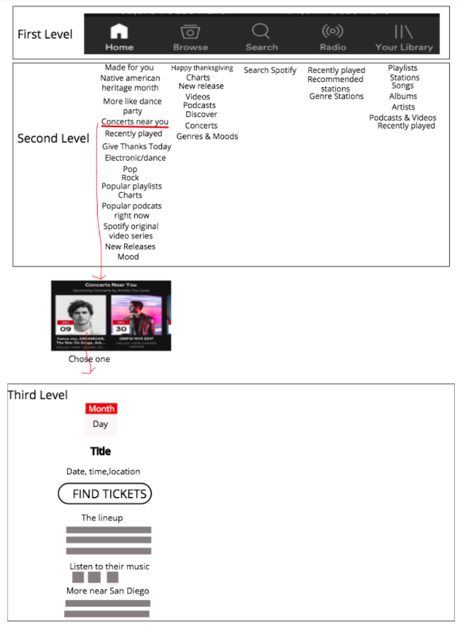

Music Playlist
Created a prototye for mobile platforms that supports music stream. We focused on redesigning the process of constructing and managing the playlists based on existing major stream apps. (Group project).
Works

~Interview~
We interviewed people who regularly listen to music through their mobile phone to get distinct user scenarios.
Here are some of the example questions we asked:
- Which is the music app that you use most often?What music app do you like to use?
- What do you like about this music application?
- How often do you use this app, and in what scenarios usually?
- Do you often create playlist? When and where do you find yourself creating playlists?
- When was the last time you made a playlist, and what reason did you have for making it?
- What's the favorite part about the app?
- Do you like the process of creating playlist?
Here are the user scenarios we got:
- Create for random meditation depending on the mood (more likely will create by search a song or select form saved songs)
- Create monthly for new songs (likely to select from genre or liked artists)
- Create for friend’s birthday (likely to select songs from friend’s liked song or playlists)
- Create for party(likely to save an entire playlist from genre or combining playlists)
- Reorganize song every week for teaching kids (likely to manage from playlist page or combining with other playlists)
~UX Comperation~
We compared work flow of three different scenarios: 1)create playlist 2)manage playlist 3)side features
Example:
1)Create Playlist
To see more UX Comperation, open new window here
~Sitemap~
We created hierarchical sitemaps for some main stream music apps to better understand the structure and diplay of information on various apps.
Here is the example of one of the sitemaps:
~Prototype Redesign~
We used invision to create the prototype of our redesigned music app. The first big redesign is that we added a select funtion so that users can manipulate multiple songs at the same time. We also added a select function in playlist when addin songs, so that users can add songs to multiple playlist at the same time.
The second big redesing is that we added a "Add songs" function that users can search and add songs on the current playlist page in stead of going to other pages.
To open the full prototype, click here
Challenges
~Interview~
When we interview people, it was hard to make people say what they did not like abou the apps, because people usually internalize the problems they encounter; they blame themselves but not the product.
Also, when we ask people about the senarios they use the music apps, we usually get very broad answers.
Therefore, to get a better interview results, we digged deeper by asking questions with more specific key words, such as when, where and how. Also, instead of asking "what did you dislike about ...", we asked questions like "what obstacles have you encountered when.." or "what were you trying to do and how would you have wished to do it".
~UX Comperation~
When we compare the user experience across various apps, we found that main stream music apps usually has very simillar features and working flows.
Therefore, we also looked up some foregin music apps, and found some distinctive differences in features and information displays.
~Prototype Redesign~
The biggest difference we decided to make is the pop-out overlay search on the playlist page (which is intended for users to add songs while staying on the playlist page). This was one of the most difficult decisions we ended up having to make with our prototype redesign. On one hand, the three dot menu is something we decided to use in other aspects of our prototype. Our first thought was that to maintain consistency we should continue to utilize that three dot menu, but in taking more time to consider we felt that it may not intuitively match the function of this overlay. We felt that in using this “add songs” function within a playlist the user would be seeking to add most likely a singular song to just that playlist. This could make the other actions that come with the three dot pop up menu somewhat unneeded. Thus we determined there was more of a pay off in utilizing a one-action plus sign button to add a song within this function was an intuitive simplification of the process.
© 2015 Youxi Li